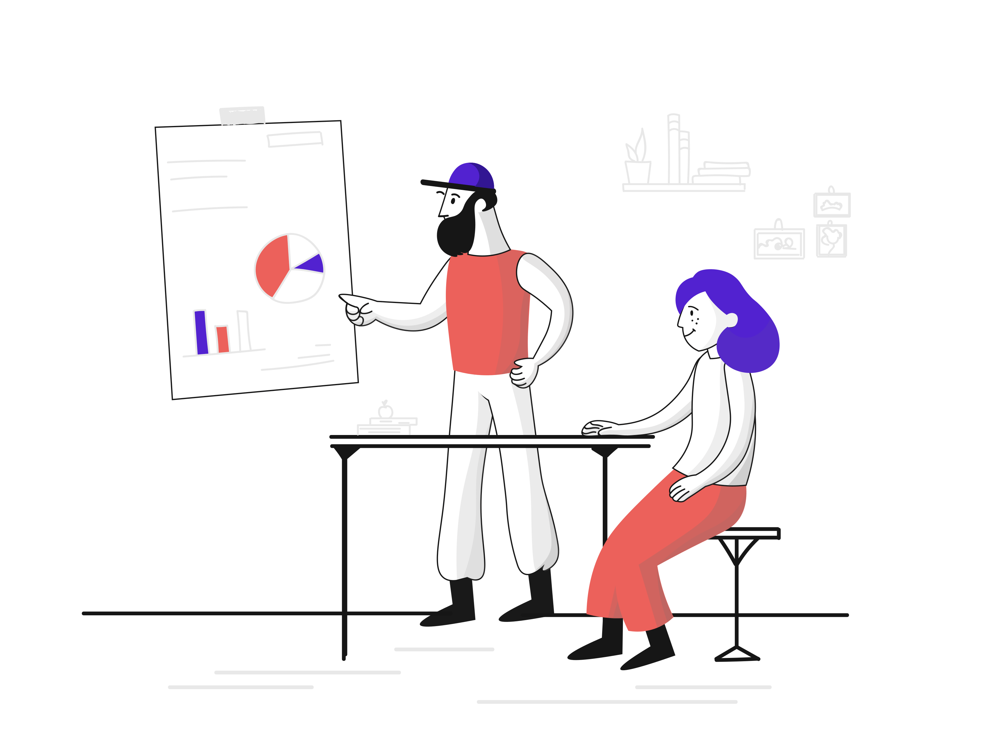

Deskripsi Singkat
Mata kuliah ini membahas pengelolaan jaringan komputer, mencakup konfigurasi, pemeliharaan, serta pengelolaan infrastruktur jaringan.

Tujuan Pembelajaran
- Memahami konsep dasar manajemen jaringan
- Mampu mengkonfigurasi web server dan DNS
- Mengetahui tools monitoring jaringan
- Mengetahui praktik keamanan jaringan
Penugasan
- Membuat web server pada layanan hosting
- Menghubungkan dengan DNS/domain
- Mengupload halaman web
- Membuktikan halaman bisa diakses publik
Daftar Kelompok Mahasiswa

Wildan Ade Mamora
NBI: 1462300005

Allodya Virginia Utomo
NBI: 1462300066

Muhammad Dani Anwar
NBI: 1462300216
Fajar Rizky Fathoni
NBI: 1462300099